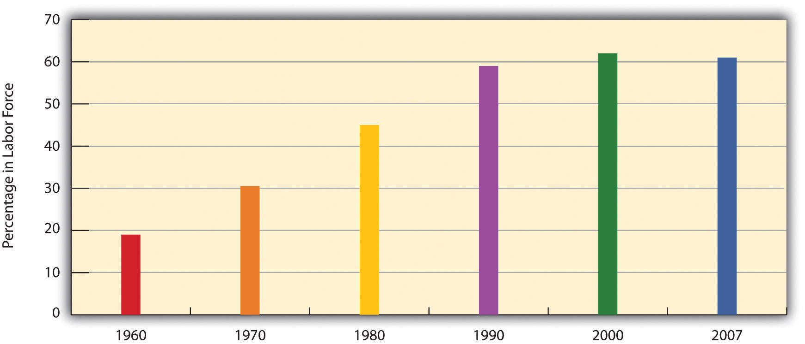
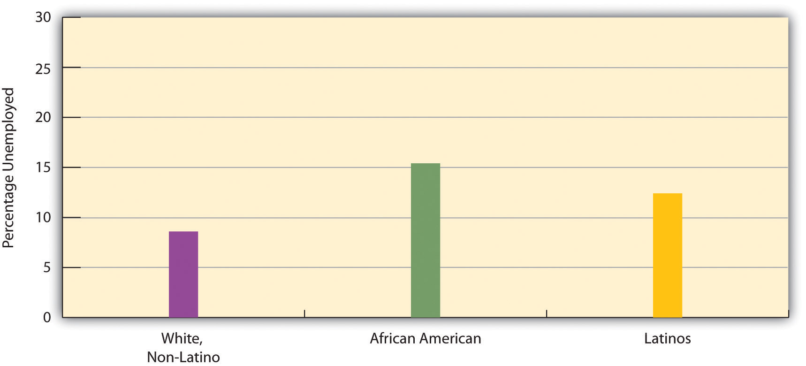

“99 Weeks Later, Jobless Have Only Desperation,” the headline said. It was August 2010, and the unemployment rate in the United States had climbed to 9.5%. Around the country, millions of people were out of work, and many had lost their unemployment insurance benefits, which ordinarily last 26 weeks but, thanks to Congressional action, were extended to 60 or 99 weeks based on a state’s unemployment rate. An estimated 1.4 million had now exceeded the 99-week limit. For the many people in this group who had been getting benefits, dubbed the “99ers,” according to a news report, their “modest payments were a lifeline that enabled them to maintain at least a veneer of normalcy, keeping a roof over their heads, putting gas in their cars, paying electric and phone bills.” One 99er was a 49-year-old woman who used to work as director of client services for a small technology company but now expected to be living in her car after being unable to find a job, despite many applications, being unable to pay her rent, and facing eviction. As she drove away from her apartment for good, she sobbed and later recalled, “At one point, I thought, you know, what if I turned the wheel in my car and wrecked my car?” Ironically, she had also fallen behind on her loan payments on her car, which was about to be repossessed. (Luo, 2010)Luo, M. (2010, August 3). 99 weeks later, jobless have only desperation. The New York Times, p. A1.
One of the most momentous events of the 20th century was the Great Depression, which engulfed the United States in 1929 and spread to the rest of the world, lasting almost a decade. Millions were thrown out of work, and bread lines became common. In the United States, a socialist movement gained momentum for a time as many workers blamed U.S. industry and capitalism for their unemployment.
The Depression involved the failing of the economy. The economy also failed in the United States beginning in late 2007, when the country entered what is being called the Great Recession. The news article that began this chapter provides just a small illustration of the millions of lives that have been affected.
This chapter presents a sociological perspective on the economy as a social institution. It reviews the history of the economy, the major types of economic systems, and the nature of work in the United States today. It also examines one of the most important if controversial aspects of the U.S. economy, the defense industry. Along the way, we will explore several sociological themes, including the importance of the economy as a key social institution for so many aspects of lives, the ways in which it reflects and reinforces the social inequalities discussed in previous chapters, and the need for change to address these inequalities.
When we hear the term economy, it is usually in the context of how the economy “is doing”: Is inflation soaring or under control? Is the economy growing or shrinking? Is unemployment rising, declining, or remaining stable? Are new college graduates finding jobs easily or not? All these questions concern the economy, but sociologists define economyThe social institution that organizes the production, distribution, and consumption of a society’s goods and services. more broadly as the social institution that organizes the production, distribution, and consumption of a society’s goods and services. Defined in this way, the economy touches us all.
The economy is composed of three sectors. The primary sectorThe part of the economy that takes and uses raw materials directly from the natural environment. is the part of the economy that takes and uses raw materials directly from the natural environment. Its activities include agriculture, fishing, forestry, and mining. The secondary sectorThe part of the economy that transforms raw materials into finished products. of the economy transforms raw materials into finished products and is essentially the manufacturing industry. Finally, the tertiary sectorThe part of the economy that provides services rather than products. is the part of the economy that provides services rather than products; its activities include clerical work, health care, teaching, and information technology services.
Societies differ in many ways, but they all have to produce, distribute, and consume goods and services. How this happens depends on which sectors of the economy are most important. This latter variable in turn depends heavily on the level of a society’s development. Generally speaking, the less developed a society’s economy, the more important its primary sector; the more developed a society’s economy, the more important its tertiary sector. As societies developed economically over the centuries, the primary sector became less important and the tertiary sector became more important. Let’s see how this happened.
When we reviewed the development of societies in Chapter 5 "Social Structure and Social Interaction", we saw that the earliest were hunting-and-gathering societies in which people eked out a meager existence by hunting animals and gathering plants to feed themselves. Most of their waking hours were devoted to these two tasks, and no separate economic institution for the production and distribution of goods and services existed. The horticultural and pastoral societies that next developed also lacked a separate economy. Although people in these societies raised animals and/or grew crops and were better off than their hunting-and-gathering counterparts, these tasks, too, were done within the family unit and monopolized most of their time. No separate institution for the production and distribution of these sources of food was involved.
This separate institution—the economy—finally did appear with the advent of agricultural societies about 5,000 years ago. These societies were able to produce food surpluses thanks to the invention of the plow and the wheel and other technological advances. These surpluses led to extensive trade within the societies themselves and also with other societies. The rise of trade was the first appearance of a separate economy. People also had to make the plows and wheels and repair them when they broke, and new crafts jobs arose to perform these functions. These jobs, too, marked the development of a separate economy. Despite this development, most people’s work still took place in or very near their homes. Craftspeople and merchants may have been part of the new economy, but most still worked out of their homes or very near them.
Work and home finally began to separate in the 1700s and 1800s as machines and factories became the primary means of production with the emergence of industrial societies. For the first time, massive numbers of people worked in locations separate from their families, and they worked not for themselves and their families but for an employer. Whole industries developed to make the machines and build the factories and to use the machines and factories to manufacture household goods, clothing, and many other products. As should be clear, the secondary sector of the economy quickly became dominant. Perhaps inevitably it led to a growth in the tertiary (service) sector to respond to the demands of an industrial economy. For example, enterprises such as banks emerged to handle the money that industrialization brought not only to people with names like Carnegie and Rockefeller but also to a growing middle class of factory managers and the businesspeople that bought and sold the products that factories were producing.
One important consequence of industrialization was the specialization of work, more commonly called the division of laborThe specialization of work, such that individuals perform only specific aspects of a task or project.. In agricultural societies, the craftspeople who made plows, wheels, and other objects would make the whole object, not just a part of it, and then sell it themselves to a buyer. With the advent of the division of labor under industrialization, this process became more specialized: some factory workers would make only one part of an object, other factory workers would make a second part, and so on; other workers would package and ship the item; and still other workers would sell it. This division of labor meant that workers became separated from the fruits of their labor, to paraphrase Karl Marx, who also worried that the type of work just described was much more repetitive and boring for workers than the craft work that characterized earlier societies. Because of these problems, Marx said, workers in industrial societies were alienated both from their work and by their work.
As Chapter 5 "Social Structure and Social Interaction" pointed out, today much of the world has moved from an industrial economy to a postindustrial economy. This is the information age, in which smartphones, netbooks, tablets, and other high-tech equipment have begun to replace machines and factories as the major means of production and in which the tertiary sector has supplanted the secondary sector. Although the information age has brought with it jobs and careers unimaginable a generation ago, it has also meant that a college education has become increasingly important for stable and well-paid employment. Postindustrial economies, then, are leaving behind workers without college degrees, who used to fare well in the manufacturing industries.
With the information age has also come an increasing globalization of the economy. The Internet connects workers and industries across the world, and multinational corporations have plants in many countries that make products for consumers in other countries. What happens economically in one part of the world can greatly affect what happens economically in other parts of the world. If the economies of Asia sour, their demand for U.S. products may decline, forcing a souring of the U.S. economy. A financial crisis in Greece and other parts of Europe during the spring of 2010 caused the stock markets in the United States to plunge. The world is indeed getting smaller all the time. We will return later to the implications of the postindustrial economy for U.S. workers.
The two major economic systems in modern societies are capitalism and socialism. In practice, no one society is purely capitalist or socialist, so it is helpful to think of capitalism and socialism as lying on opposite ends of a continuum. Societies’ economies mix elements of both capitalism and socialism but do so in varying degrees, so that some societies lean toward the capitalist end of the continuum, while other societies lean toward the socialist end. For example, the United States is a capitalist nation, but the government still regulates many industries to varying degrees. The industries usually would prefer less regulation, while their critics usually prefer more regulation. The degree of such regulation was the point of controversy after the failure of banks and other financial institutions in 2008 and 2009 and after the BP oil spill in 2010. Let’s see how capitalism and socialism differ.
CapitalismAn economic system in which the means of production are privately owned. is an economic system in which the means of production are privately owned. By means of production, we mean everything—land, tools, technology, and so forth—that is needed to produce goods and services. As outlined by famed Scottish philosopher Adam Smith (1723–1790), widely considered the founder of modern economics, the most important goal of capitalism is the pursuit of personal profit (Smith, 1776/1910).Smith, A. (1910). The wealth of nations. London, England: J. M. Dent & Sons; New York, NY: E. P. Dutton. (Original work published 1776) As individuals seek to maximize their own wealth, society as a whole is said to benefit. Goods get produced, services are rendered, people pay for the goods and services they need and desire, and the economy and society as a whole prosper.
As people pursue personal profit under capitalism, they compete with each other for the greatest profits. Businesses try to attract more demand for their products in many ways, including lowering prices, creating better products, and advertising how wonderful their products are. In capitalist theory, such competition helps ensure the best products at the lowest prices, again benefiting society as a whole. Such competition also helps ensure that no single party controls an entire market. According to Smith, the competition that characterizes capitalism should be left to operate on its own, free of government intervention or control. For this reason, capitalism is often referred to as laissez-faire (French for “leave alone”) capitalism, and terms to describe capitalism include the free-enterprise system and the free market.
The hallmarks of capitalism, then, are private ownership of the means of production, the pursuit of profit, competition for profit, and the lack of government intervention in this competition.
The features of socialism are the opposite of those just listed for capitalism and were spelled out most famously by Karl Marx. SocialismAn economic system in which the means of production are collectively owned, usually by the government. is an economic system in which the means of production are collectively owned, usually by the government. Whereas the United States has several airlines that are owned by airline corporations, a socialist society might have one government-owned airline.
The most important goal of socialism is not the pursuit of personal profit but rather work for the collective good: the needs of society are considered more important than the needs of the individual. Because of this view, individuals do not compete with each other for profit; instead they work together for the good of everyone. If under capitalism the government is supposed to let the economy alone, under socialism the government controls the economy.
The ideal outcome of socialism, said Marx, would be a truly classless or communist society. In such a society all members are equal, and stratification does not exist. Obviously Marx’s vision of a communist society was never fulfilled, and nations that called themselves communist departed drastically from his vision of communism.
Recall that societies can be ranked on a continuum ranging from mostly capitalist to mostly socialist. At one end of the continuum, we have societies characterized by a relatively free market, and at the other end we have those characterized by strict government regulation of the economy. Figure 13.1 "Capitalism and Socialism Across the Globe" depicts the nations of the world along this continuum. Capitalist nations are found primarily in North America and Western Europe but also exist in other parts of the world.
Figure 13.1 Capitalism and Socialism Across the Globe

Source: Adapted from The Heritage Foundation. (2010). Distribution of economic freedom. Retrieved from http://www.heritage.org/index/pdf/2010/Index2010_map.pdf.
People have debated the relative merits of capitalism and socialism at least since the time of Marx (Bowles, 2007; Cohen, 2009).Bowles, P. (2007). Capitalism. New York, NY: Pearson/Longman; Cohen, G. A. (2009). Why not socialism? Princeton, NJ: Princeton University Press. Compared to socialism, capitalism seems to have several advantages. It produces greater economic growth and productivity, at least in part because it provides more incentives (i.e., profit) for economic innovation. It also is often characterized by greater political freedom in the form of civil rights and liberties. As an economic system, capitalism seems to lend itself to personal freedom: because its hallmarks include the private ownership of the means of production and the individual pursuit of profit, there is much more emphasis in capitalist societies on the needs and desires of the individual and less emphasis on the need for government intervention in economic and social affairs.
Yet capitalism also has its drawbacks. There is much more economic inequality in capitalism than in socialism. Although capitalism produces economic growth, not all segments of capitalism share this growth equally, and there is a much greater difference between the rich and poor than under socialism. People can become very rich in capitalist nations, but they can also remain quite poor. As we saw in Chapter 9 "Global Stratification", several Western European nations that are more socialist than the United States have fewer extremes of wealth and poverty and take better care of their poor.
Another possible drawback depends on whether you prefer competition or cooperation. As we saw in Chapter 3 "Culture", important values in the United States include competition and individualism, both of which arguably reflect this nation’s capitalist system. Children in the United States are raised with more of an individual orientation than children in socialist societies, who learn that the needs of their society are more important than the needs of the individual. Whereas U.S. children learn to compete with each other for good grades, success in sports, and other goals, children in socialist societies learn to cooperate to achieve tasks.
More generally, capitalism is said by its critics to encourage selfish and even greedy behavior: if individuals try to maximize their profit, they do so at the expense of others. In competition, someone has to lose. A company’s ultimate aim, and one that is generally lauded, is to maximize its profits by driving another company out of the market altogether. If so, that company succeeds even if some other party is hurting. The small Mom-and-Pop grocery stores, drugstores, and hardware stores are almost a thing of the past, as big-box stores open their doors and drive their competition out of business. To its critics, then, capitalism encourages harmful behavior. Yet it is precisely this type of behavior that is taught in business schools.
Some nations combine elements of both capitalism and socialism and are called social democracies, while their combination of capitalism and socialism is called democratic socialismAn economic system in which the government owns several important industries, but much property remains in private hands, and political freedom is widespread.. In these nations, which include Denmark, Sweden, and several other Western European nations, the government owns several important industries, but much property remains in private hands, and political freedom is widespread. The government in these nations has extensive programs to help the poor and other people in need. Although these nations have high tax rates to help finance their social programs, their experience indicates it is very possible to combine the best features of capitalism and socialism while avoiding their faults (see the “Learning From Other Societies” box).
Social Democracy in Scandinavia
The five Scandinavian nations, also called the Nordic nations, are Denmark, Finland, Iceland, Norway, and Sweden. These nations differ in many ways, but they also share many similarities. In particular, they are all social democracies, as their governments own important industries while their citizens enjoy much political freedom. Each nation has the three branches of government with which most people are familiar—executive, judicial, and legislative—and each nation has a national parliament to which people are elected by proportional representation.
Social democracies like the Scandinavian nations are often called controlled capitalist market economies. The word controlled here conveys the idea that their governments either own industries or heavily regulate industries they do not own. According to social scientist Tapio Lappi-Seppälä of Finland, a key feature of these social democracies’ economies is that inequality in wealth and income is not generally tolerated. Employers, employees, and political officials are accustomed to working closely to ensure that poverty and its related problems are addressed as much as possible and in as cooperative a manner as possible.
Underlying this so-called social welfare model is a commitment to universalism. All citizens, regardless of their socioeconomic status or family situation, receive various services, such as child care and universal health care, that are free or heavily subsidized. To support this massive provision of benefits, the Scandinavian nations have very high taxes that their citizens generally accept as normal and necessary.
This model has been praised by political scientist Torben Iversen, who lauds its goal of achieving full employment and equality. This attempt has not been entirely free of difficulties but overall has been very successful, as the Scandinavian nations rank at or near the top in international comparisons of health, education, economic well-being, and other measures of quality of life. The Scandinavian experience of social democracy teaches us that it is very possible to have a political and economic model that combines the best features of capitalism and socialism while retaining the political freedom that citizens expect in a democracy. (Berman, 2006; Iversen, 1998; Lappi-Seppälä, 2007)Berman, S. (2006). The primacy of politics: Social democracy and the making of Europe’s twentieth century. New York, NY: Cambridge University Press; Iversen, T. (1998). The choices for Scandinavian social democracy in comparative perspective. Oxford Review of Economic Policy, 14, 59–75; Lappi-Seppälä, T. (2007). Penal policy in Scandinavia. Crime and Justice, 36, 217–296.
One of the most important but controversial features of modern capitalism is the corporationAn organization that has a legal existence apart from that of its members., a formal organization that has a legal existence, including the right to sign contracts, that is separate from that of its members. We have referred to corporations several times already and now discuss them in a bit more detail.

Corporations such as Exxon dominate the U.S. economy. They employ thousands of workers, and their assets total many trillions of dollars.
Source: Photo courtesy of David Shankbone, http://commons.wikimedia.org/wiki/File:1251_Avenue_of_the_Americas.JPG.
Adam Smith, the founder of capitalism, envisioned that individuals would own the means of production and compete for profit, and this is the model the United States followed in its early stage of industrialization. After the Civil War, however, corporations quickly replaced individuals and their families as the owners of the means of production and as the competitors for profit. As corporations grew following the Civil War, they quickly tried to control their markets by, for example, buying up competitors and driving others out of business. To do so, they engaged in bribery, kickbacks, and complex financial schemes of dubious ethics. They also established factories and other workplaces with squalid conditions. Their shady financial practices won their chief executives the name “robber barons” and led the federal government to pass the Sherman Antitrust Act of 1890 designed to prohibit restraint of trade that raised prices (Hillstrom & Hillstrom, 2005).Hillstrom, K., & Hillstrom, L. C. (Eds.). (2005). The Industrial Revolution in America. Santa Barbara, CA: ABC-CLIO.
More than a century later, corporations have increased in both number and size. Although several million U.S. corporations exist, most are fairly small. Each of the largest 500, however, has an annual revenue exceeding $4.6 billion (2008 data) and employs thousands of workers. Their total assets run into the trillions of dollars (Wiley, 2009).Wiley, H. (2009). Welcome to the 2009 Fortune 500. Fortune, 159(9), 14. It is no exaggeration to say they control the nation’s economy, as together they produce most of the U.S. private sector output, employ millions of people, and have revenues equal to most of the U.S. gross domestic product. In many ways, the size and influence of corporations stifle the competition that is one of the hallmarks of capitalism. For example, several markets, including that for breakfast cereals, are controlled by four or fewer corporations. This control reduces competition because it reduces the number of products and competitors, and it thus raises prices to the public (Parenti, 2007).Parenti, M. (2007). Democracy for the few (6th ed.). Belmont, CA: Wadsworth.
The last few decades have seen the proliferation and rise of the multinational corporationA corporation with headquarters in one nation but with factories and other operations in many other nations., a corporation with headquarters in one nation but with factories and other operations in many other nations (Wettstein, 2009).Wettstein, F. (2009). Multinational corporations and global justice: Human rights obligations of a quasi-governmental institution. Stanford, CA: Stanford Business Books. Multinational corporations centered in the United States and their foreign affiliates have more than $18 trillion in assets and employ more than 32 million people (U.S. Census Bureau, 2010).U.S. Census Bureau. (2010). Statistical abstract of the United States: 2010. Washington, DC: U.S. Government Printing Office. Retrieved from http://www.census.gov/compendia/statab The assets of the largest multinational corporations exceed those of many of the world’s nations. Often their foreign operations are in poor nations, whose low wages make them attractive sites for multinational corporation expansion. Many multinational employees in these nations work in sweatshops at very low pay and amid substandard living conditions. Dependency theorists, discussed in Chapter 9 "Global Stratification", say that multinationals not only mistreat workers in poor nations but also exploit these nations’ natural resources. In contrast, modernization theorists, also discussed in Chapter 9 "Global Stratification", say that multinationals are bringing jobs to developing nations and helping them achieve economic growth. As this debate illustrates, the dominance of multinational corporations will certainly continue to spark controversy.
Another controversial aspect of corporations is the white-collar crime in which they engage (Rosoff, Pontell, & Tillman, 2010).Rosoff, S. M., Pontell, H. N., & Tillman, R. (2010). Profit without honor: White collar crime and the looting of America (5th ed.). Upper Saddle River, NJ: Prentice Hall. As we saw in Chapter 7 "Deviance, Crime, and Social Control", price fixing by corporations costs the U.S. public some $60 billion annually (Simon, 2008).Simon, D. R. (2008). Elite deviance (9th ed.). Boston, MA: Allyn & Bacon. Workplace-related illnesses and injuries that could have been prevented if companies obeyed federal regulations kill about 50,000 workers each year (AFL-CIO, 2007).AFL-CIO. (2007). Death on the job: The toll of neglect. Washington, DC: Author. An estimated 10,000 U.S. residents die annually from dangerous products. All in all, corporate lawbreaking and neglect probably result in more than 100,000 deaths annually and cost the public more than $400 billion (Barkan, 2012).Barkan, S. E. (2012). Criminology: A sociological understanding (5th ed.). Upper Saddle River, NJ: Prentice Hall.
In sum, corporations are the dominant actors in today’s economy. They provide most of our products and many of our services and employ millions of people. It is impossible to imagine a modern industrial system without corporations. Yet they often stifle competition, break the law, and, according to their critics, exploit people and natural resources in developing nations. The BP oil spill in 2010 reminds us of the damage corporations can cause. BP’s disaster was the possible result, according to news reports, of many violations of federal safety standards for oil drilling (Uhlmann, 2010).Uhlmann, D. M. (2010, June 4). Prosecuting crimes against the earth. The New York Times, p. A27.
The history of work and labor in the United States reflects the change, discussed earlier, in economies from agricultural to industrial to postindustrial. From the time the colonies began in the 1600s until well into the 19th century, the United States was primarily an agricultural society, as people worked on their own farms, and the family was the major unit of economic production. With the advent of industrialization came machines and factories, and the secondary, manufacturing sector became dominant. In the decades after the Civil War, the Industrial Revolution transformed the nation.
One of the most important developments accompanying industrialization was the rise of labor unions and their conflict with management over wages and working conditions (Dubofsky & Dulles, 2010).Dubofsky, M., & Dulles, F. R. (2010). Labor in America: A history (8th ed.). Wheeling, IL: Harlan Davidson. The pay that workers received was quite low, and the conditions in which they worked were often miserable. The typical employee worked at least 10 hours a day for 6 or 7 days a week, with almost no overtime pay and no paid vacations or holidays. To improve wages and working conditions, many labor unions were founded after the Civil War, only to meet determined opposition from companies, the government, and the courts. Companies told each other which workers were suspected of being union members, and these workers were then prevented from getting jobs. Strikers were often arrested for violating laws prohibiting strikes. When juries began finding them not guilty, employers turned to asking judges for injunctions that prohibited strikes. Workers who then went on strike were held in contempt of court by the judge as juries were kept out of the process.
From the 1870s through the 1930s, labor unions fought companies over issues such as low wages and substandard working conditions.
Source: Photo courtesy of Special Collections and Archives, Georgia State University Library, http://www.library.gsu.edu/spcoll/spcollimages/labor/19clabor/Labor%20Prints/80-39_1.jpg.
Many strikes became violent, as companies brought in armed guards, state troopers, and strikebreakers to put down the strikes. Workers themselves rioted to protest their low wages and abject working conditions. Summarizing this period, two labor historians note that the United States “has had the bloodiest and most violent labor history of any industrial nation in the world” (Taft & Ross, 1990, p. 174).Taft, P., & Ross, P. (1990). American labor violence: Its causes, character, and outcome. In N. A. Weiner, M. A. Zahn, & R. J. Sagi (Eds.), Violence: Patterns, causes, public policy (pp. 174–186). San Diego, CA: Harcourt Brace Jovanovich. During an 1897 coal-mining strike in Pennsylvania, for example, 18 miners were killed and 40 wounded after being shot in the back by a sheriff’s deputies. Several years later, company guards and state troops in Ludlow, Colorado, opened fire on mining families as they fled from a tent city that the guards and troops had set on fire. Their bullets killed more than two dozen people, including 13 children (McGovern & Guttridge, 1972).McGovern, G. S., & Guttridge, L. F. (1972). The great coalfield war. Boston, MA: Houghton Mifflin.
Labor strife reached a peak during the Great Depression, as masses of people blamed business leaders for their economic plight. Huge sit-ins and other labor protests occurred in Detroit at auto plants. In response the Congress passed several laws that gave workers a minimum wage, the right to join unions, a maximum-hour workweek, and other rights that Americans now take for granted.
Today labor unions have lost some of their influence, especially as postindustrialization has supplanted the industrial economy and as the United States has lost much of its manufacturing base. Four decades ago, about one-fourth of all private-sector nonagricultural workers belonged to labor unions. By 1985 this figure had dropped to 14.6%, and today it stands at less than 8% (Hirsch & Macpherson, 2009).Hirsch, B., & Macpherson, D. (2009). Union membership and coverage database from the CPS. Retrieved from http://unionstats.com In response, labor unions have ramped up their efforts to increase their membership, only to find that U.S. labor laws are filled with loopholes that allow companies to prevent their workers from forming a union. For example, after a company’s workers vote to join a union, companies can appeal the vote, and it can take several years for courts to order the company to recognize the union. In the meantime, the low wages, the working conditions, and other factors that motivated workers to want to join a union are allowed to continue.
Recall that the United States has joined other industrial nations in moving into postindustrial economies. If physical prowess and skill with one’s hands were prerequisites for many industrial jobs, mental prowess and communication skills are prerequisites for postindustrial jobs.
This move to a postindustrial economy has been a mixed blessing for many Americans. The information age has obvious benefits too numerous to mention, but there has also been a cost to the many workers whom postindustrialization and the globalization of the economy have left behind. Since the 1980s many manufacturing companies moved their plants from U.S. cities to sites in the developing world in Asia and elsewhere, a problem called capital flightThe moving of manufacturing companies from U.S. cities to sites in the developing world in Asia and elsewhere.. This shift has helped fuel a loss of more than 1.5 million manufacturing jobs in the United States (Mishel, Bernstein, & Shierholz, 2009).Mishel, L., Bernstein, J., & Shierholz, H. (2009). The state of working America 2008/2009. Ithaca, NY: ILR Press [An imprint of Cornell University Press].
A related problem is outsourcingThe hiring by U.S. companies of overseas workers for customer care, billing services, and other jobs that Americans used to do., in which U.S. companies hire workers overseas for customer care, billing services, and other jobs that Americans used to do. China, India, and the Philippines, which have skilled workforces relatively fluent in English, are the primary nations to which U.S. companies outsource their work. At least 4 million jobs are estimated to have been transferred to these nations from the United States and other Western countries (Thomas, 2009).Thomas, M. (2009, July 16). Outsourcing statistics: What figures will tell you. EzineArticles. Retrieved from http://ezinearticles.com/?Outsourcing-Statistics---What-Figures-Will-Tell-You&id=2621948 Many call centers employ workers in India, and when you call up a computer company or some other business for technical help, you might very well talk with an Indian. Because these call centers have cost Americans jobs and also because Americans and Indians often have trouble understanding each other’s accents, outsourcing has been very controversial in the decade since it became popular.
All these problems reflect a more general shift in the United States from goods-producing jobs to service jobs. Although some of these service jobs, such as many in the financial and computer industries, are high paying, many are in low-wage occupations, such as restaurant and clerical work, that pay less than the goods-producing jobs they replaced. Partly as a result, the average hourly wage (in 2007 dollars) in the United States for workers (excluding managers and supervisors) rose only from $16.88 in 1979 to $17.42 in 2007. This change represented an increase of just 0.1% per year during that three-decade span (Mishel, Bernstein, & Shierholz, 2009).Mishel, L., Bernstein, J., & Shierholz, H. (2009). The state of working America 2008/2009. Ithaca, NY: ILR Press [An imprint of Cornell University Press].
These wage figures mask an important gender difference. Men’s median hourly wages dropped (in 2007 dollars) by 4.4% from 1979 to 2007, while women’s wages rose by 24.4% (while still remaining $3.11 less per hour than men’s wages in 2007) (Mishel, Bernstein, & Shierholz, 2009).Mishel, L., Bernstein, J., & Shierholz, H. (2009). The state of working America 2008/2009. Ithaca, NY: ILR Press [An imprint of Cornell University Press]. Although, as we saw in Chapter 11 "Gender and Gender Inequality", women have been catching up to men in wages, some of this catching up is due to the decline in male wages.
Wage changes in recent years also depend on what social class someone is in. While the average compensation of chief executive officers (CEOs) of large corporations grew by 167% from 1989 to 2007, the average compensation of the typical worker grew by only 10%. Another way of understanding this disparity is perhaps more striking. In 1965, CEOs earned 24 times more than the typical worker; in 2007 they earned 275 times more than the typical worker (Mishel, Bernstein, & Shierholz, 2009).Mishel, L., Bernstein, J., & Shierholz, H. (2009). The state of working America 2008/2009. Ithaca, NY: ILR Press [An imprint of Cornell University Press].
The civilian labor forceAll noninstitutionalized civilians 16 years old or older who work for pay or are looking for work. consists of all noninstitutionalized civilians 16 years of age or older who work for pay or are looking for work. The civilian labor force (hereafter labor force) consists of about 154 million people, or almost two-thirds of the population, including about 72% of men and 59% of women (Bureau of Labor Statistics, 2009).Bureau of Labor Statistics. (2009). Employment and earnings online. Washington, DC: Bureau of Labor Statistics, U.S. Department of Labor. Retrieved from http://www.bls.gov/opub/ee/home.htm Chapter 11 "Gender and Gender Inequality" noted that women’s labor force participation soared during the last few decades. This general increase is even steeper for married women with children under 6 years of age: in 2007 almost 62% of such women were in the labor force, compared to less than 19% in 1960 (U.S. Census Bureau, 2010),U.S. Census Bureau. (2009). Statistical abstract of the United States: 2009. Washington, DC: U.S. Government Printing Office. Retrieved from http://www.census.gov/compendia/statab a threefold difference (see Figure 13.2 "Labor Force Participation Rate, Percentage of Married Women with Children Younger Than 6 Years of Age, 1960–2007").
Figure 13.2 Labor Force Participation Rate, Percentage of Married Women with Children Younger Than 6 Years of Age, 1960–2007
Source: Data from U.S. Census Bureau. (2010). Statistical abstract of the United States: 2010. Washington, DC: U.S. Government Printing Office. Retrieved from http://www.census.gov/compendia/statab.
Unemployment is a fact of life. There will always be people laid off or fired, who voluntarily quit their jobs, or who just graduated school and are still looking for work. But most unemployed people are involuntarily unemployed, and for them the financial and psychological consequences can be devastating, as we saw at the beginning of this chapter.
Unemployment rates rise and fall with the economy, and the national unemployment rate was as high as 10.2% in October 2009 amid the Great Recession that began almost two years earlier; it was still 9.8% in November 2010, amounting to some 15.1 million people. But whether unemployment is high or low, it always varies by race and ethnicity, with African American and Latino unemployment rates higher than the white rate (see Figure 13.3 "Race, Ethnicity, and Unemployment Rate, June 2010"). Unemployment is also higher for younger people than for older people. In June 2010, 25.7% of all teenagers in the labor force (aged 16–19) were unemployed, a figure almost three times higher than that for adults. The unemployment rate for African Americans in this age group was a very high 39.9%, considerably greater than the 23.2% figure for whites in this age group (Bureau of Labor Statistics, 2010).Bureau of Labor Statistics. (2010). Employment and earnings online. Washington, DC: Bureau of Labor Statistics, U.S. Department of Labor. Retrieved from http://www.bls.gov/opub/ee/home.htm
Figure 13.3 Race, Ethnicity, and Unemployment Rate, June 2010
Source: Bureau of Labor Statistics (2010). Employment & earnings online. Retrieved from http://www.bls.gov/opub/ee/home.htm.
Unemployment figures are misleading in an important respect, as they do not include people who are underemployed. Underemployment includes unemployed and also two other types of people: (a) those who are working part time but who want to work full time and (b) those who have stopped looking for work because they have not been able to find a job. Many economists think that underemployment provides a more accurate measure than unemployment of the number of people with employment problems. For example, in June 2010, when the unemployment rate was 9.5% and 14.6 million people were officially unemployed, the underemployment rate was 16.5%, equal to more than 25 million people. Reflecting the racial/ethnic disparity in unemployment, 23.2% of Latino workers and 23.5% of African American workers were underemployed, compared to only 13.8% of white workers (Economic Policy Institute, 2010).Economic Policy Institute. (2010). Economy track. Retrieved from http://www.economytrack.org/underemployment.php Reflecting on the great amount of underemployment during the Great Recession, one economist commented, “When you combine the long-term unemployed with those who are dropping out and those who are working part time because they can’t find anything else, it is just far beyond anything we’ve seen in the job market since the 1930s” (Herbert 2010, p. A25).Herbert, B. (2010, August 10). The horror show. The New York Times, p. A25.
We have just seen that unemployment rises when the economy falters and that race and ethnicity affect the probability of being unemployed. These two facts provide evidence supporting the sociological imagination. As C. Wright Mills (1959)Mills, C. W. (1959). The sociological imagination. London, England: Oxford University Press. emphasized in his original discussion of this concept, unemployment is best viewed more as a public issue than as a personal trouble. When so many people are unemployed during an economic recession and when there is such striking evidence of higher unemployment rates among the persons of color who have the least opportunity for the education and training needed to obtain and keep a job, it is evident that high unemployment rates reflect a public issue rather than just a collection of public troubles.
Several kinds of problems make it difficult for people of color to be hired into jobs and thus contribute to the racial/ethnic disparity in unemployment. The “Sociology Making a Difference” box discusses these problems.
Race, Ethnicity, and Employment
Sociological research has documented that people of color face several kinds of problems in securing employment. While their relative lack of education is an obvious factor, other kinds of problems are also apparent.
One problem is racial discrimination on the part of employers, regardless of how conscious employers are of their discriminatory behavior. Chapter 10 "Race and Ethnicity" recounted a study by sociologist Devah Pager (2007),Pager, D. (2007). Marked: Race, crime, and finding work in an era of mass incarceration. Chicago, IL: University of Chicago Press. who had young white and African American men apply independently in person for various jobs in Milwaukee. These men wore the same type of clothing and reported similar levels of education and other qualifications. Some said they had a criminal record, while others said they had not committed any crimes. In striking evidence of racial discrimination in hiring, African American applicants without a criminal record were hired at the same low rate as white applicants with a criminal record. Pager and sociologists Bruce Western and Bart Bonikowski also investigated racial discrimination in another field experiment in New York City (Pager, Bonikowski, & Western, 2009).Pager, D., Bonikowski, B., & Western, B. (2009). Discrimination in a low-wage labor market: A field experiment. American Sociological Review, 74(5), 777–799. They had white, African American, and Latino “testers,” all of them “well-spoken, clean-cut young men” (p. 781), apply in person to low-level service jobs (e.g., retail sales and delivery drivers) requiring no more than a high school education; all the testers had similar (hypothetical) qualifications. Almost one-third (31%) of white testers received a call back or job offer, compared to only 25.2% of Latino testers and 15.2% of African American testers. The researchers concluded that their findings “add to a large research program demonstrating the continuing contribution of discrimination to racial inequality in the post-civil rights era” (p. 794).
Other kinds of evidence also reveal racial discrimination in hiring. Two scholars sent job applications in response to help-wanted ads in Boston and Chicago (Bertrand & Mullainathan, 2003).Bertrand, M., & Mullainathan, S. (2003). Are Emily and Greg more employable than Lakisha and Jamal? A field experiment on labor market discrimination. National Bureau of Economic Research (Working Paper No. 9873). Retrieved from http://papers.nber.org/papers/w9873.pdf They randomly assigned the applications to feature either a “white-sounding” name (e.g., Emily or Greg) or an “African American–sounding” name (e.g., Jamal and Lakisha). White names received 50% more callbacks than African American names for job interviews.
Racial differences in access to the informal networks that are often so important in finding a job also contribute to the racial/ethnic disparity in employment. In a study using data from a nationwide survey of a random sample of Americans, sociologist Steve McDonald and colleagues found that people of color and women are less likely than white males to receive informal word of vacant, high-level supervisory positions (McDonald, Nan, & Ao, 2009).McDonald, S., Nan, L., & Ao, D. (2009). Networks of opportunity: Gender, race, and job leads. Social Problems, 56(3), 385–402.
As these studies indicate, research by sociologists and other social scientists reveals that race and ethnicity continue to make a difference in employment prospects for Americans. This body of research reveals clear evidence of discrimination, conscious or unconscious, in hiring and also of racial/ethnic differences in access to the informal networks that are often so important for hiring. By uncovering this evidence, these studies underscore the need to address discrimination, access to informal networks, and other factors that contribute to racial and ethnic disparities in employment. For this reason, sociology is again making a difference.
Long-term unemployment often causes various social and psychological difficulties.
Source: Photo courtesy of Michael Raphael at the Federal Emergency Management Agency, http://www.photolibrary.fema.gov/photolibrary/photo_details.do?id=29783.
Although the news article that began this chapter gave us a heartrending account of a woman experiencing long-term unemployment, survey data also provide harsh evidence of the social and psychological effects of being unemployed. In July 2010, the Pew Research Center issued a report based on a survey of 810 adults who were currently unemployed or had been unemployed since the Great Recession began in December 2007 and 1,093 people who had never been unemployed during the recession (Morin & Kochhar, 2010).Morin, R. and Kochhar, R. (2010). Lost income, lost friends—and loss of self-respect: The impact of long-term unemployment. Washington, DC: Pew Research Center. The report’s title, Lost Income, Lost Friends—and Loss of Self-Respect, summarized its major findings. Of those who had been unemployed for at least 6 months (long-term unemployment), 44% said that the recession had caused “major changes” in their lives, versus only 20% of those who had never been unemployed. More than half of the long-term unemployed said their family income had declined, and more than 40% said that their family relations had been strained and that they had lost contact with close friends. In another finding, 38% said they had “lost some self-respect” from being unemployed. One-third said they were finding it difficult to pay their rent or mortage, compared to only 16% of those who had never been unemployed during the recession. Half had borrowed money from family or friends to pay bills, versus only 18% of the never unemployed. Of all the people who had been unemployed, almost half had experienced sleep difficulties, and 5% had experienced drug or alcohol problems. All these numbers paint a distressing picture of the social and psychological impact of unemployment during the Great Recession that began in late 2007.
Recall that Karl Marx thought that job alienation was a major problem in industrial societies. Following up on his concern, social scientists have tried to determine the extent of worker alienation and job satisfaction, as well as the correlates of these two attitudes (Bockerman & Ilmakunnas, 2009).Bockerman, P., & Ilmakunnas, P. (2009). Job disamenities, job satisfaction, quit intentions, and actual separations: Putting the pieces together. Industrial Relations, 48(1), 73–96. They generally find that American workers like their jobs much more than Marx anticipated, but also that the extent to which they like their jobs depends on the income their jobs bring, the degree of autonomy they enjoy in their jobs, and other factors.
One way of measuring job satisfaction is simply to ask people, “On the whole, how satisfied are you with the work you do?” The General Social Survey uses precisely this question, and 85.8% of respondents (2008 data) say they are satisfied with their jobs, with only 14.1% saying they are dissatisfied. This latter figure is probably lower than Marx would have predicted for a capitalist society like the United States.
One possible reason for the low amount of job dissatisfaction, and one that Marx did not foresee, is that workers develop friendships in their workplace (McGuire, 2007).McGuire, G. M. (2007). Intimate work: A typology of the social support that workers provide to their network members. Work and Occupations, 34, 125–147. Coworkers discuss all kinds of topics with each other, including personal matters, sports, and political affairs, and they often will invite other coworkers over to their homes or go out with them to a movie or a restaurant. Such friendships can lead workers to like their jobs more than they otherwise would and help overcome the alienation they would feel without the friendships. Such coworker friendships are quite common, as research finds that about half of all workers have at least one close friend who is a coworker (Marks, 1994).Marks, S. R. (1994). Intimacy in the public realm: The case of co-workers. Social Forces, 72, 843–858.
An unfortunate fact about work and labor in the United States is crime in the workplace. Two major types of such crime exist: employee theft and workplace violence.
Chapter 7 "Deviance, Crime, and Social Control" briefly discussed employee theftTheft of objects or money by employees from their workplaces. as one of the many types of crime that occur in the United States and elsewhere. Employee theft takes two forms, pilferage and embezzlement. PilferageThe stealing of goods by employees from their workplaces. involves the stealing of goods, while embezzlementThe stealing of money in its various dimensions (cash, electronic transactions, etc.) by employees from their workplaces. involves the stealing of money in its various dimensions (cash, electronic transactions, etc.). Whichever form it takes, employee theft is so common that is has been called a “widespread, pervasive, and costly form of crime” (Langton, Piquero, & Hollinger, 2006, p. 539).Langton, L., Piquero, N. L., & Hollinger, R. (2006). An empirical test of the relationship between employee theft and low self-control. Deviant Behavior 27(5), 537–565. It is estimated that about 75% of employees steal at least once from their employers and that the annual amount of employee theft is $19.5 billion (National Retail Federation, 2007).National Retail Federation. (2007, June 11). Retail losses hit $41.6 billion last year, according to National Retail Security Survey. [Press release]. Retrieved from http://www.nrf.com/modules.php?name=News&op=viewlive&sp_id=318
Employee theft occurs for many reasons, but a common reason is worker dissatisfaction with various aspects of their job. They may think their wages or salaries are too low, they may feel they have been treated unfairly by their employer, and so forth. As the estimates of the amount of employee theft suggest, this form of theft is not condemned by many people, and, indeed, many workplaces have informal norms that approve of certain forms of theft—for example, it is okay to steal inexpensive objects such as (depending on the workplace) utensils, food, pencils and pens, or toilet paper. Not surprisingly, embezzlement is often more costly to an employer than pilferage; although it can involve just a few dollars from a cash register, it can also involve hundreds of thousands or millions of dollars acquired through more sophisticated means. In an example of a very costly embezzlement, the head cashier at the University of California, San Francisco, received a 7-year prison term for embezzling more than $4 million (Chiang, 2004).Chiang, H. (2004, July 2). Ex-UCSF employee gets 7-year sentence. San Francisco Chronicle. Retrieved from http://www.sfgate.com/cgi-bin/article.cgi?f=/chronicle/archive/2004/2007/2002/BAG2004S2007EU2921.DTL
When we think of employee theft, we probably usually think of theft by blue-collar or lower white-collar employees. However, physicians, attorneys, and other professionals also steal from their patients/clients or from the government, even if their form of theft is often much more complex and sophisticated than what the term “employee theft” may usually imply. Attorneys may bill their clients for work that was never done, and physicians may bill Medicare or private insurance for patients they never saw or for procedures that were never performed. We call this form of “employee” theft professional fraud. Fraud by physicians and other health-care professionals (including nursing homes and medical testing laboratories) is thought to amount to $100 billion every year (Rosoff, Pontell, & Tillman, 2010),Rosoff, S. M., Pontell, H. N., & Tillman, R. (2010). Profit without honor: White collar crime and the looting of America (5th ed.). Upper Saddle River, NJ: Prentice Hall. a figure that far exceeds the $19.5 billion in “conventional” employee theft and the similar figure lost to property crime (robbery, burglary, larceny, and motor vehicle theft).
In August 2010, a disgruntled employee went on a shooting rampage inside a beer distributor warehouse in Manchester, Connecticut, killing eight people before shooting himself. He had just been told he would be fired or forced to resign after being caught stealing beer and began the shootings at the end of a disciplinary hearing (Rivera & Haughney, 2010).Rivera, R. and Haughney, C. (2010, August 5). Amid mourning, eerie details emerge about Connecticut shootings. The New York Times, p. A19.
Many people die or are injured by acts of violence at their workplaces every year in the United States. In 2008, 517 people were slain at their workplaces, according to the U.S. Bureau of Labor Statistics. As disturbing as this number was, it represented a sharp drop from the numbers that prevailed a decade earlier, when 1,080 workplace homicides occurred in 1994. From 2003 through 2008, an average of 497 workplace homicides occurred every year (Needleman, 2010).Needleman, S. E. (2010, August 10). When violence strikes the workplace. Wall Street Journal. Retrieved from http://online.wsj.com/article/SB10001424052748704164904575421560153438240.html?mod=googlenews_wsj
In terms of who is involved and the reasons for their involvement, three kinds of workplace homicides are the most common. The first and by far the most common type is homicide as the result of robbery. This category includes the many store clerks, gas station attendants, taxi drivers, and other employees who are slain during a robbery, as well as police who are killed as they try to stop a robbery or apprehend the offender. The second category is homicide committed as an act of domestic violence; in this type, the offender, almost always a man, seeks out his wife or girlfriend (or ex-wife or ex-girlfriend) at her workplace and kills her. The third category involves disgruntled workers, such as the one at the Connecticut beer distributor just discussed, who kill one or more people at their workplace whom they blame for problems the killers have been having. Although this type of homicide is the type that the phrase “workplace violence” or “workplace killings” usually brings to mind, it is actually the least common of the three types listed here (Fox, 2010).Fox, J. A. (2010, August 5). Workplace homicide: What is the risk? [Web log post]. Retrieved from http://boston.com/community/blogs/crime_punishment/2010/08/workplace_homicide_the_risks.html
As noted, workplace violence was more common during the 1990s than today, reflecting a general drop in U.S. violence since that decade. National survey evidence indicates that an average of about 1.7 million acts of violence occurred every year in the workplace during the 1990s: 900 homicides, 70,000 robberies, 1.6 million aggravated and simple assaults, and more than 36,000 rapes and sexual assaults (Duhart, 2001).Duhart, D. T. (2001). Violence in the workplace, 1993–99. Washington, DC: Bureau of Justice Statistics, U.S. Department of Justice.
A key component of the U.S. economy is the defense industry. The military in the United States involves not just the armed forces but also some of the largest corporations that receive billions of dollars in defense contracts, as well as the government leaders who approve large military budgets to fund these contracts.
The military has played a fundamental role in some of the most significant events of the last 100 years and beyond. One of these, of course, was World War II. This war was what we now call “the good war.” Millions died on the battlefield, in cities bombed by planes, and in concentration camps, and in the end Hitler and his allies were defeated. About 20 years after World War II ended, the United States began fighting another war meant to save the world for democracy, but this war was very different from the one against Hitler. This war was fought in Vietnam, and however a noble effort World War II might have been, the Vietnam War was just as ignoble to its critics. It was a war, some said, not to save the world for democracy but to help extend America’s power where it did not belong. If the World War II generation grew up with a patriotic love for their nation, the Vietnam War generation grew up with much more cynicism about their government and about the military.
Ironically, that generation’s concern about the military was shared by none other than President Dwight D. Eisenhower, who warned about the dangers of what he called the military-industrial complexThe close relationships among military leaders, government officials, and defense contractors. in his farewell presidential address. Eisenhower himself had been a member of the military-industrial complex, having served as a five-star general and supreme commander of the Allied forces in Europe during World War II and head of Columbia University before becoming president. His military experience made him no fan of warfare, as he once observed, “I hate war as only a soldier who has lived it can, only as one who has seen its brutality, its futility, its stupidity.” He also feared that the military-industrial complex was becoming too powerful and gaining “unwarranted influence” over American life as it acted for its own interests and not necessarily for those of the nation as a whole. He warned that the “potential for the disastrous rise of misplaced power exists and will persist” (Eisenhower, 1960, p. A1).Eisenhower, D. D. (1960). Public papers of the presidents of the United States: Dwight D. Eisenhower. Washington, DC: U.S. Government Printing Office.
Eisenhower’s fears about the military-industrial complex reflected his more general concern about militarismAn overemphasis on military policy and spending., or an overemphasis on military policy and spending, which he thought was costing the nation far too much money. In a remarkable and now famous statement made early in his presidency in April 1953, Eisenhower (1960)Eisenhower, D. D. (1960). Public papers of the presidents of the United States: Dwight D. Eisenhower. Washington, DC: U.S. Government Printing Office. declared,
Every gun that is made, every warship launched, every rocket fired, signifies in the final sense, a theft from those who hunger and are not fed, those who are cold and are not clothed. This world in arms is not spending money alone. It is spending the sweat of its laborers, the genius of its scientists, the hopes of its children. This is not a way of life at all in any true sense. Under the clouds of war, it is humanity hanging on a cross of iron.
A half-century after Eisenhower made this statement, U.S. military spending continues unabated. In 2009 it was $767 billion (including $92 billion for veterans’ benefits) and accounted for almost 22% of all federal spending (U.S. Census Bureau, 2010)U.S. Census Bureau. (2010). Statistical abstract of the United States: 2010. Washington, DC: U.S. Government Printing Office. Retrieved from http://www.census.gov/compendia/statab but also for a much higher percentage of federal spending over which the government has any control. The federal budget includes both mandatory and discretionary spending. As the name implies, mandatory spending is required by various laws and includes such things as Social Security, Medicare and Medicaid, food stamps, and interest payments on the national debt; much of these mandatory expenses are funded by trust funds, such as Social Security taxes, which are raised and spent separately from income taxes. Discretionary spending involves the money the president and Congress must decide how to spend each year and includes income tax dollars only. Military spending accounts for about 43% of discretionary spending (Friends Committee on National Legislation, 2009).Friends Committee on National Legislation. (2009). How much of your 2008 income taxes pay for war? Washington, DC: Friends Committee on National Legislation. Retrieved from http://www.fcnl.org/issues/item.php?item_id=3553&issue_id=19
The U.S. military budget is by far the highest in the world and dwarfs the military budgets for the nations ranking after the United States. In 2009, the U.S. military budget was $661 billion. The nations ranking after the United States were China, $100 billion; France, $64 billion; United Kingdom, $58 billion; Russia, $53 billion; Japan, $51 billion; and Germany, $46 billion. U.S. military spending accounted for 43% of the world’s military spending in 2009 (Stockholm International Peace Research Institute, 2010).Stockholm International Peace Research Institute. (2010). The 15 major spender countries in 2009. Retrieved from http://www.sipri.org/research/armaments/milex/resultoutput/15majorspenders
Another dimension of militarism involves arms exports by both the U.S. government and U.S. military contractors. Combining data on both types of exports, the United States sent $12.2 billion in arms deliveries to other nations in 2008. This figure ranked the highest in the world and constituted about 38% of all world arms exports. Russia ranked second with $5.4 billion in arms deliveries, while Germany ranked third with $2.9 billion (Grimmett, 2009).Grimmett, R. E. (2009). Conventional arms transfers to developing nations, 2001–2008. Washington, DC: Congressional Research Service. Most arms exports from the United States and other exporters go to developing nations, and critics say that the exports help fuel the worldwide arms race and international discord and that they often go to nations ruled by dictators, who then use them to threaten their own people (Morgan, 2008; Stohl, Schroeder, & Smith, 2007).Morgan, M. (2008). The American military after 9/11: Society, state, and empire. New York, NY: Palgrave Macmillan; Stohl, R., Schroeder, M., & Smith, D. (2007). The small arms trade: A beginner’s guide. Oxford, England: Oneworld.
Oscar Arias, a former president of Costa Rica and winner of the 1987 Nobel Peace Prize, echoed President Eisenhower when he wrote a decade ago that U.S. military spending took money away from important domestic needs. “Americans are hurt,” he warned, “when the defense budget squanders money that could be used to repair schools or to guarantee universal health care” (Arias, 1999).Arias, O. (1999, June 23). Stopping America’s most lethal export. The New York Times, p. A19.
Cost equivalencies illustrate what is lost when so much money is spent on the military. An F-22 fighter aircraft, conceived and built to win fights with aircraft that the Soviet Union (and later, Russia) never built, costs about $350 million (Smith, 2009).Smith, R. J. (2009, July 10). Premier U.S. fighter jet has major shortcomings. The Washington Post, p. A1. This same sum could be used to pay the salaries of about 11,700 new teachers earning $30,000 per year or to build 23 elementary schools at a cost of $15 million each. A nuclear submarine can cost at least $2.5 billion. This sum could provide 500,000 scholarships worth $5,000 each to low- and middle-income high school students to help them pay for college.
A key question is whether U.S. military spending is higher than it needs to be. Experts disagree over this issue. Some think the United States needs to maintain and even increase its level of military spending, even with the Cold War long ended, to replace aging weapons systems, to meet the threat posed by terrorists and by “rogue” nations such as Iran, and to respond to various other trouble spots around the world. Military spending is good for workers, they add, because it creates jobs, and it also contributes to technological development (Ruttan, 2006).Ruttan, V. (2006). Is war necessary for economic growth? Military procurement and technology development. New York, NY: Oxford University Press.
Other experts think the military budget is much higher than it needs to be to defend the United States and to address its legitimate interests around the world. They say the military budget is bloated because the defense industry lobbies so successfully and because military spending provides jobs and income to the home districts of members of Congress. For these reasons, they say, military spending far exceeds the amount that needs to be spent to provide an adequate defense for the United States and its allies. They also argue that military spending actually produces fewer jobs than spending in other sectors. According to a recent estimate, $1 billion spent by the Pentagon creates 11,600 jobs, but the same $1 billion spent in other sectors would create 17,100 clean energy jobs, 19,600 health-care jobs, and 29,100 education jobs (Pollin & Garrett-Peltier, 2009).Pollin, R., & Garrett-Peltier, H. (2009). The U.S. employment effects of military and domestic spending priorities: An updated analysis. Washington, DC: Institute for Policy Studies.
As this overview of the debate over military spending indicates, the military remains a hot topic more than two decades after the Cold War ended following the demise of the Soviet Union. As we move further into the 21st century, the issue of military spending will present a major challenge for the U.S. political and economic institutions to address in a way that meets America’s international and domestic interests.
Sociological theory and research are once again relevant for addressing certain issues raised by studies of the economy. One issue is racial and ethnic discrimination in hiring and employment. Several kinds of studies, but especially field experiments involving job applicants who are similar except for their race and ethnicity, provide powerful evidence of continuing discrimination despite federal and state laws banning it. This evidence certainly suggests the need for stronger enforcement of existing laws against racial and ethnic bias in employment and for public education campaigns to alert workers to signs of this type of discrimination.
A second issue concerns the satisfaction that American workers find in their jobs. Although the level of this satisfaction is fairly high, sociological research highlights the importance of coworker friendships for both job satisfaction and more general individual well-being. These research findings indicate that employers and employees alike should make special efforts to promote coworker friendships. Because work is such an important part of most people’s lives, these efforts should prove beneficial for many reasons.
A third issue is unemployment. Sociologists, psychologists, and other scholars have documented the social and emotional consequences of unemployment. The effects of unemployment go far beyond the loss of money. Revealed by much research, these consequences sometimes seem forgotten in national debates over whether to extend unemployment insurance benefits. But unemployment does have a human face, and it is essential to provide monetary benefits and other kinds of help for the unemployed.
Because a sociological understanding of the economy emphasizes its structural problems rather than personal faults of the unemployed and underemployed, this sort of understanding points to the social democracies of Scandinavia as possible models for the United States to emulate. As the “Learning From Other Societies” box discussed, these nations have combined democratic freedom and economic prosperity. Although there are certainly no signs that the United States is about to follow their example, our nation has much to learn from these societies as it considers how best to rebuild its economy and to help the millions of people who are unemployed or underemployed.
You graduated from college a year ago and have begun working in the human relations department of a medium-sized company. You are very happy with your salary and prospects for promotion. However, part of your job involves processing application forms from prospective employees, and you have become concerned with one part of that process. Your supervisor has told you to put applications with “black-sounding” names like Jamal and Lakisha in a separate file to be examined only if a sufficient number of employees cannot be hired from the “regular” file. What, if anything, do you do? Explain your answer.